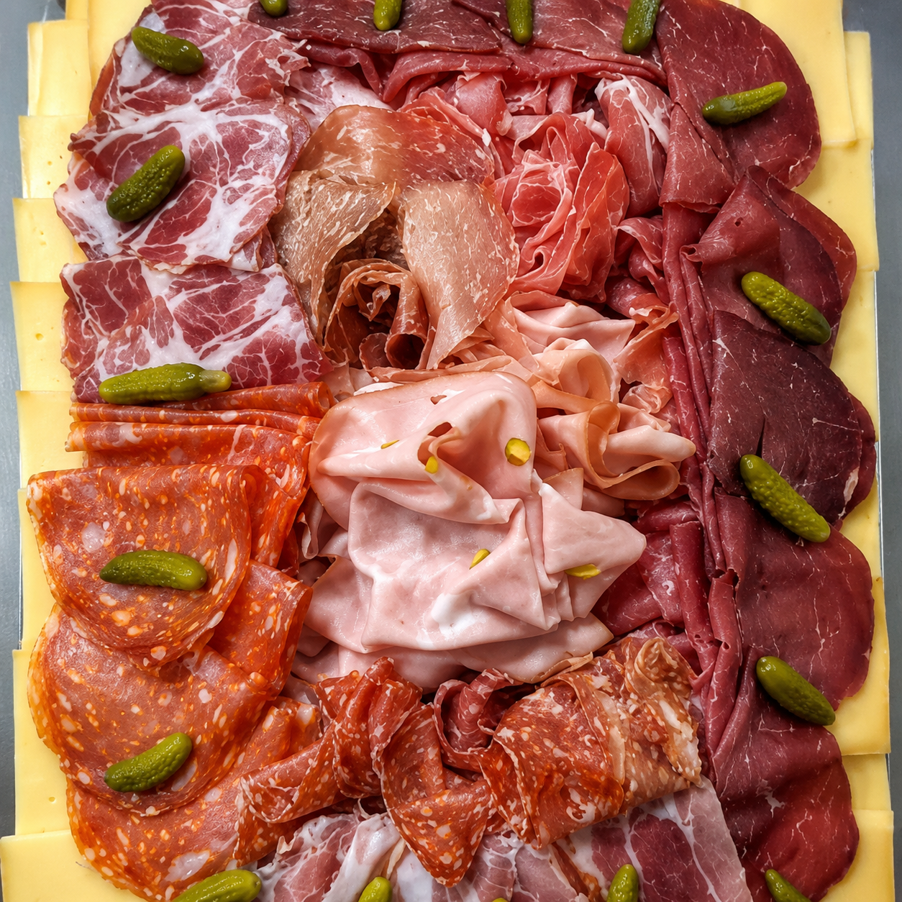
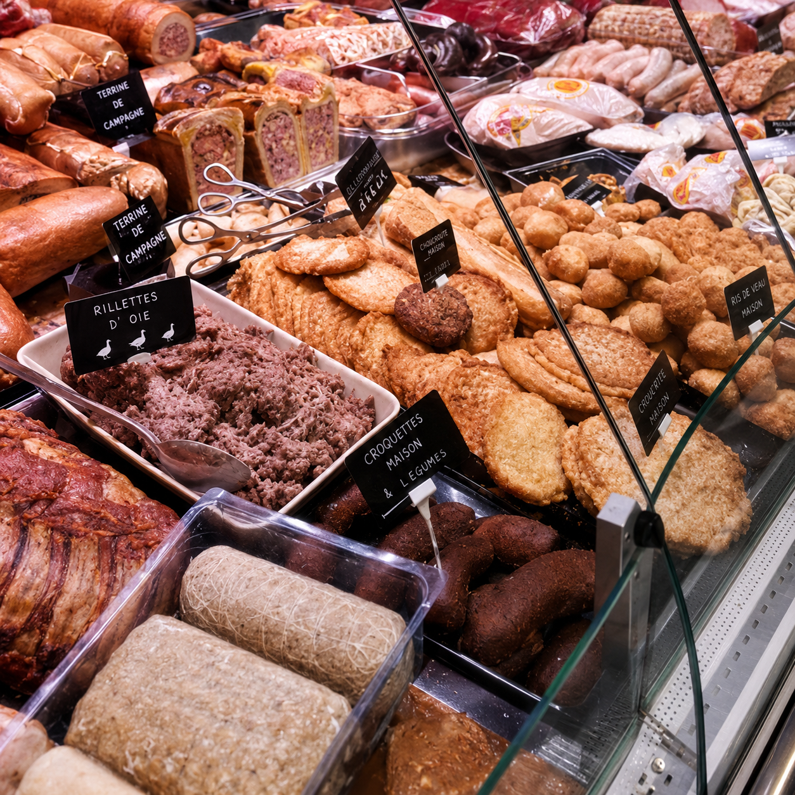
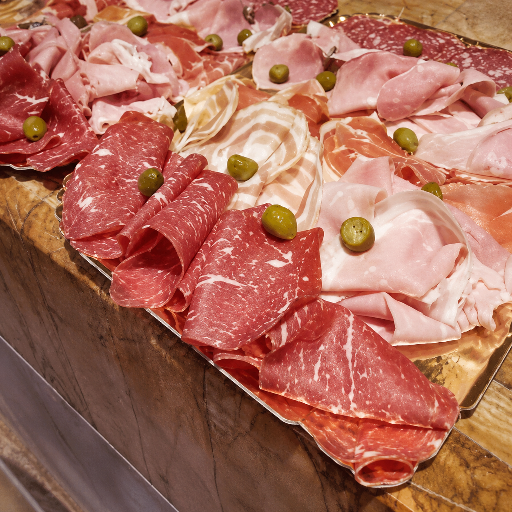
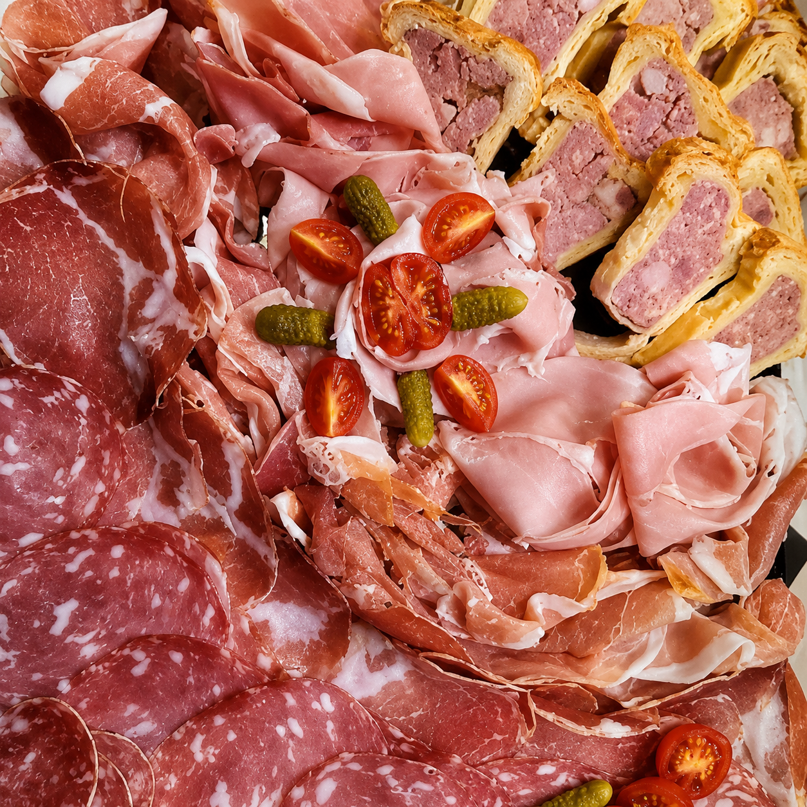
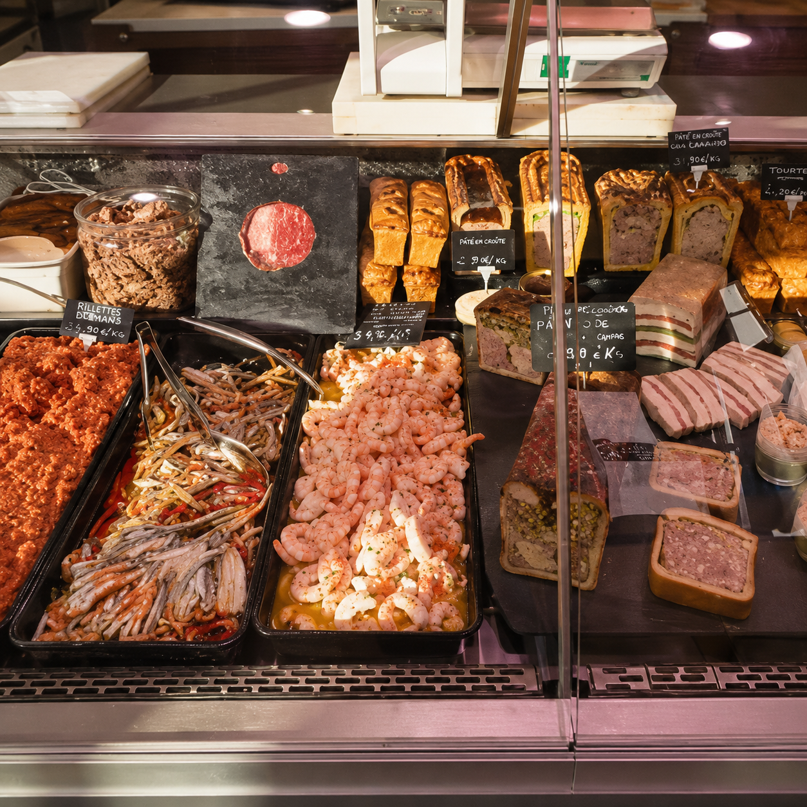
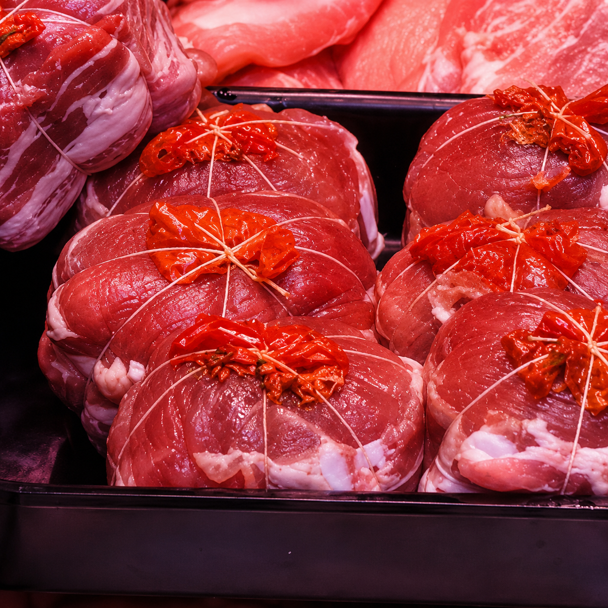

Savoir-faire maison
La charcuterie
Des recettes généreuses, des préparations soignées et des spécialités pensées pour vos repas du quotidien et vos moments de partage.

À partager
Plateaux et assortiments
Jambons, saucissons, pâtés et spécialités sont assemblés avec soin pour composer des plateaux conviviaux.
Demander un plateau
En vitrine
Des recettes de caractère
Retrouvez une sélection renouvelée de charcuteries, terrines et préparations artisanales selon les saisons.

Conseil
La juste quantité
Pour un apéritif, un buffet ou un repas en famille, notre équipe vous aide à choisir les produits et les quantités adaptées.
Contacter une boutiqueQuelques idées gourmandes



